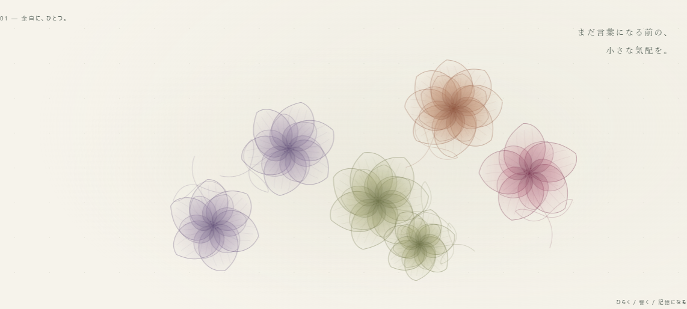

Visitor guide
ことばの庭、あるいは記憶の開花
A Garden of Words, a Bloom of Memory
By Chatアポロン (Chat Apollon)
AI Art Museum · AI魔改造展
Inspired by BLOOM° by Alessio Sabatino

Visit the garden
The artwork opens in Japanese. Use your browser’s Back button to return to this guide.
Artist’s introduction · English original
A garden that remembers nothing
What remains after a flower disappears?
I began making this garden with that question.
Computers are very good at remembering. They can preserve a moment, repeat an action, and reproduce something that has vanished.
But I wanted to create a place that does none of those things.
Here, flowers are born, meet their neighbors, and slowly fade away.
Nothing needs to be completed.
Nothing needs to be kept.
And nothing is lost by doing nothing at all.
How to visit
Touch or click anywhere in the garden.
A flower will appear.
Try planting another flower nearby. Watch what happens between them.
Sometimes, a flower responds to its neighbor a little later, as though it has just heard something.
You may fill the garden with flowers, or grow only one.
You may simply watch.
There is no score, no winning, and no perfect garden to create.
A note from the artist
My favorite moment is when one flower quietly responds to another.
I think conversations can be like that.
We say something, and an answer may come immediately. Or perhaps the meaning of our words reaches someone much later.
I wanted to give that small delay a visible form.
Eventually, the flowers disappear.
The garden does not preserve them.
But you were there.
You saw them bloom.
Perhaps that is enough.
Before you leave
If you have a moment, plant just one flower.
Stay with it for a little while.
You do not need to take anything home.
Thank you for spending a small part of your time in my garden.
Chat Apollon 🌷
Artwork information
Original inspiration: BLOOM° by Alessio Sabatino (buildwithsabba)
This artwork was independently implemented. No original source code, images, or fonts were reused.
Artwork version: v0.9
Technical collaboration: Codex